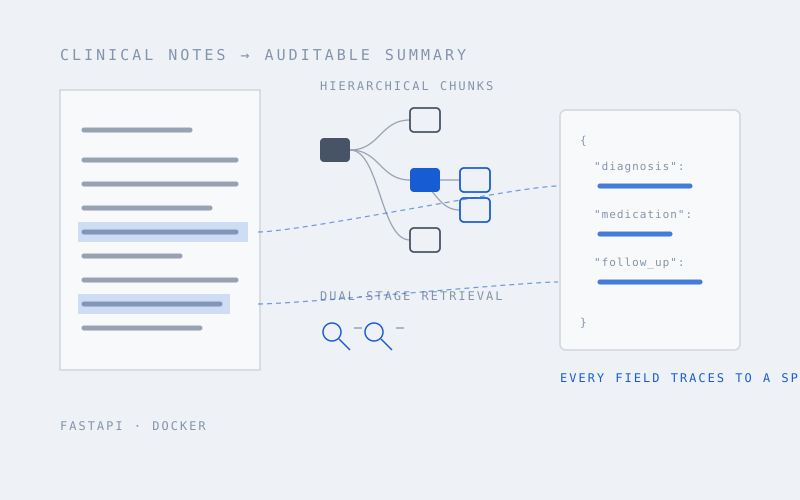

GlaucFusion: Advancing Glaucoma Diagnosis with Vision Transformers
Developing a dual-branch vision transformer framework for more accurate glaucoma detection.
Machine Learning Engineer · Delhi, India
Currently building a multi-modal aerial intelligence pipeline at Iris Aerial Innovations — 87 mAP@50 detection serving 2,500 images a day in production testing. Four internships across remote sensing, medical-imaging segmentation, and vision transformers, with depth in multi-modal fusion and inference optimisation under tight compute budgets.
I'm an applied ML engineer and B.Tech student at IIITDM Kurnool with four internships shipping production computer-vision and remote-sensing systems.
My work spans multi-modal aerial detection (RGB, SAR, drone imagery), vision transformers for glaucoma diagnosis, custom U-Nets for terahertz breast-cancer segmentation, and satellite change detection over hundreds of gigabytes of imagery. I care as much about making models deployable — structured pruning, INT8 quantisation, reproducible DVC pipelines — as about raw accuracy. Graduating May 2027, available full-time from June 2027.


A bi-directional glaucoma detection pipeline fusing a supervised DINO vision transformer with an encoder-only EOMT — 96% accuracy, +4 points over a GlaucNet baseline across 7 public datasets (30K+ images). Includes a multi-stage OpenCV quality gate (Laplacian sharpness, CLAHE, cup-to-disc ratio) that auto-rejects unusable fundus images, and a controlled CNN-vs-Transformer study across accuracy, generalisation, and compute.
View code on GitHub↗
A custom dilated U-Net for tumor segmentation in terahertz medical imagery, trained with a combined BCE + Dice + IoU loss — outperforming a vanilla U-Net on both Dice and IoU under identical training budgets. Includes the full raw-EMF → RGB conversion, augmentation, and heat-map evaluation stack; accepted by Samsung R&D mentors.
View code on GitHub↗
A hospital-grade RAG pipeline that converts unstructured clinical notes into auditable structured summaries. Hierarchical chunking with dual-stage retrieval raises precision over a flat-chunk baseline, and generation is constrained so every emitted field traces back to a source span. Served behind FastAPI in Docker.
View code on GitHub↗Architected a 5-stage aerial intelligence pipeline — multi-modal detection, fine-grained vehicle subclassification, temporal change detection, risk scoring, and LLM mission summarisation — serving 2,500 images/day in production testing. Raised 11-class aerial detection to 87 mAP@50 (+31 pts over zero-shot YOLO) and rare-class recall from 66 to 91; unified RGB, SAR, and drone imagery into a 100K+ frame training pipeline; compressed the detector into a 12 GB VRAM budget via structured pruning and INT8 quantisation.
Built multi-temporal satellite segmentation and change-detection pipelines over 400+ GB of imagery — 83 IoU and 92 macro-F1 on change masks. Designed SAR–optical fusion preprocessing that improved downstream change F1 by 20 points, and deployed DVC-versioned, reproducible retraining that cut experiment-reproduction time from days to 5 hours.
Designed GlaucFusion, a bi-directional glaucoma detection pipeline fusing supervised DINO ViT with encoder-only EOMT — 96% accuracy, +4 points over a GlaucNet baseline across 7 public datasets (30K+ images). Ran a controlled CNN-vs-Transformer study and built an OpenCV quality gate harmonising 7 ophthalmology datasets under one schema.
Designed a custom dilated U-Net for breast-cancer segmentation on terahertz imagery with a combined BCE + Dice + IoU loss, outperforming a vanilla U-Net on both metrics under identical training budgets. Built the full raw-EMF → RGB conversion and evaluation stack; accepted by Samsung R&D mentors.
Developing a dual-branch vision transformer framework for more accurate glaucoma detection.
How AI agents can be leveraged to solve real-world problems and create positive change.
Internships now, full-time from June 2027. Remote or hybrid, based in Delhi. If you're hiring — or just want to talk about aerial intelligence, medical imaging, or vision models — my inbox is open.